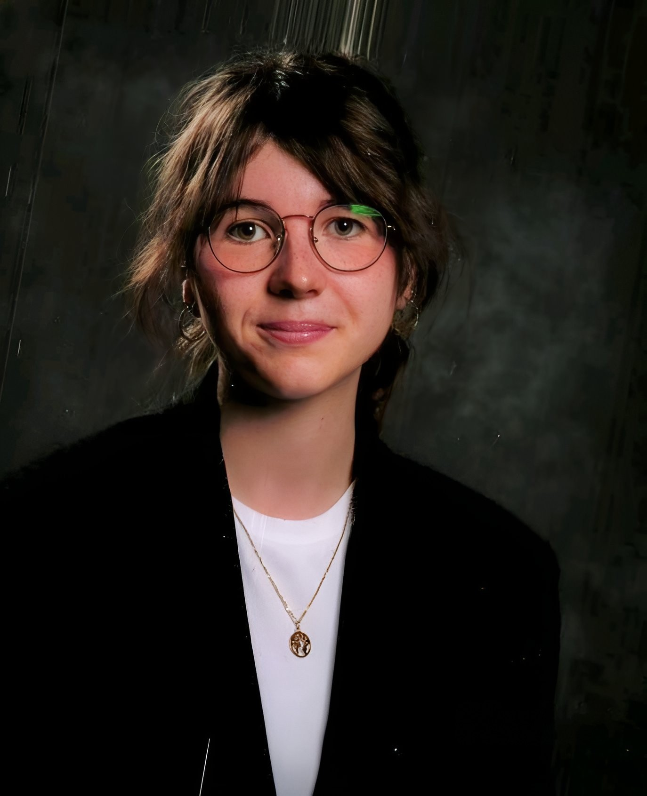
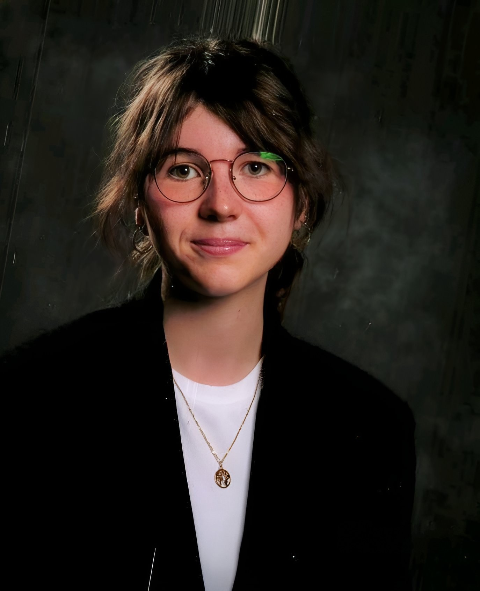

À propos de moi
Je m'appelle Pauline Dierick et je suis étudiante en DNMADE numérique à Gobelins Paris. Je suis très créative, et j'aime mettre mes talents au service de l'expression de mes émotions. J'aime les chiens et les étoiles.
Je m'appelle Pauline Dierick et je suis étudiante en DNMADE numérique à Gobelins Paris. Je suis très créative, et j'aime mettre mes talents au service de l'expression de mes émotions. J'aime les chiens et les étoiles.
